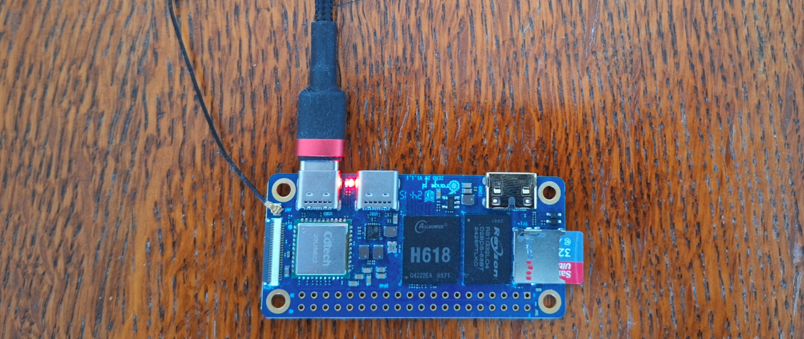

unsafehttp is an extremely minimal HTTP server written in C
from scratch, to practice C, *nix socket programming, and C compilation.
It just served this webpage to you!
Yes, that's a marquee tag. Backward-compatibility is a beautiful thing.
You can find the source here.
It's running on a tiny Orange Pi SBC in my office:

There's no HTTP proxy between you, just a port-forward through my VPS.
You're connecting right to the socket that the code is
accepting on.
To prevent user-initiated filesystem interaction, and to avoid having to
worry about path cleaning, unsafehttp loads all content
into a hash table in memory on startup, with the request/file paths as
keys and the file contents as values. Servicing a request is simply
looking up the content via the path. Any malicious paths
willshould then just fail to find an entry.
RFC 9112 is a fantastic document that details the exact format of HTTP 1.1 requests, how servers should respond to those requests, and is even written in a way that would make implementing a full test suite a reasonable task.
This server follows almost none of that.
In the interest of keeping this a fun and short side project, I've implemented the very bare minimum for browsers to be able to send a simple HTTP GET request to the server, and receive a response that lets them render a webpage. Again in the interest of keeping this short, I'm not even following the RFC exactly. Readers MUST NOT hold this against the project, and SHOULD use this as motivation to keep some of their own side projects fun and short.